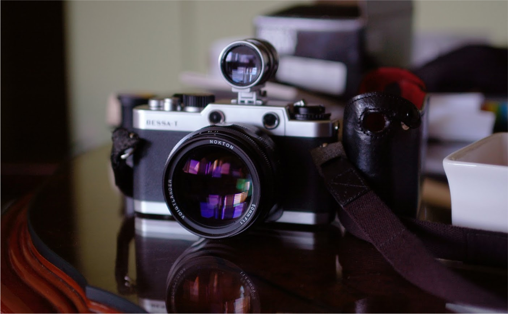

Voigtländer lens name system
May 2nd, 2023
Bellevue, WA
Voigtländer logo
What is Voigtländer?
Voigtländer is a German brand of cameras and lenses that has been in existence since 1756. It is one of the oldest and most respected brands in the photography industry. Voigtländer lenses are known for their high quality and performance. They are popular among both amateur and professional photographers.
In the early 1990s, Voigtländer was bought by the Japanese camera company Cosina. Cosina (using the Voightlander for it's name mostly) continues to produces and sell a wide range of high quality lenses (Nikon F and Z mounts, Micro Four-thirds, Sony E mount, and Leica M and LTM mounts)
I have had 2 Voigtländer lenses for the Leica M and LTM mounts.
- 21mm Color Skopar f4 (LTM)
- 50mm Nokton 1.1 (M)
21mm Color Skopar f4 on my M6
50mm Nokton f1.1 on Bessa T
Voigtländer lens naming system
As you can see from above the words Color-skopar are not words that are commonly used.
These names are part of the Voigtländer lens naming system that they use to denote which category a lens belongs to.
- Nokton [Design for low light]
- Heliar [slower for daytime]
- Skopar [small as possible less quality]
- Ultron [workhorse and high quality]
- Lanthar [best optical quality]
From latin Noctis (night) mirroring other lens naming conventions for low light or night time photography
From latin Helios (day), shoot this in bright day, small and compact, shoot this stopped down? slower day time possibly triplet lens arrangement
Made with "Color-skopar coating" for color films, primarily compact and light
Maximum lens aperture between f1.7 and f2 (similar to summi-”cron” in terms of speed/quality?) no limitations for smaller design, they are designed for quality first.
Some older lens were made with Lanthanum, a very high optical quality glass. Voigtländer no longer uses Lanthanum, but this would be similar to the summi-”lux” range. Big heavy, high number of elements. Apochromatic design to mitigate color fringing and chromatic aberrations.
Voigtländer also uses additional words and abbrivations in their name to futher classify their lenses
- SC
- MC
- Vintage
- Classic
Single Coating on the glass lens (less contrast from the coating for b&w and film)
Multi Coating on the glass lens (better for color and digital)
Aesthetical difference only, a cosmetic finish on the lens body (nickel, painted brass, silver)
More "simple" lens configurations, less complicated (read: fewer elements) in the lens configuration. This could result in easier to manufacture and to repair, but can also have possible image quality issues